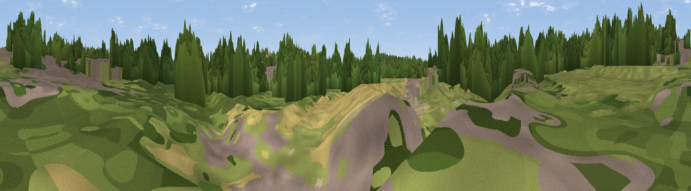

River Tame Flood Gates
#46015 in England · top 96% of its area beats it · near Great BarrWhere it is
The exact computed spot (SP 03892 92918). Click the marker for map links.
The view, rendered

A 360° render of this exact spot computed from the terrain model, tree cover and land cover — summer colours, afternoon light, calibrated against photographs of famous viewpoints. Real trees, hedges and buildings will differ in detail.
The panorama
Grey silhouette: terrain skyline in each direction (720 bearings, Earth curvature and refraction included). Dashed green: skyline with trees (+15 m) and buildings (+8 m) as obstacles. Blue strip: how far the ground is visible on each bearing.
Where the view opens
Wedge length = distance to the farthest visible ground on that bearing (vegetation-aware). Rings at 10, 25 and 50 km.
What fills the view
52% woodland · 24% grassland · 20% built-up · 3% cropland
Angular shares of the visible panorama (visual magnitude), not map area. Landscape diversity 0.48 (0–1 Shannon).
Key numbers
More beautiful places nearby
The staircase of upgrades: each row has a higher view potential than everything closer. Driving times are estimates from straight-line distance, calibrated against real road routing — check an actual route before setting out.
| Place | Direction | Drive | Score |
|---|---|---|---|
| Viewpoint near West Bromwich | WSW · 1 km | ~2 min | 12.2 |
| Viewpoint near Great Barr | NNE · 2 km | ~6 min | 24.2 |
| Viewpoint near Great Barr | NNE · 4 km | ~10 min | 34.7 |
| Viewpoint near Great Barr | NNE · 5 km | ~11 min | 50.0 |
| Viewpoint near Streetly | NNE · 5 km | ~11 min | 69.5 |
| Viewpoint near Clent | SW · 16 km | ~28 min | 73.8 |
| Viewpoint near Clent | SW · 17 km | ~29 min | 74.3 |
| Knowle Hill | WSW · 36 km | ~55 min | 75.5 |
52.53411, -1.94405 · source: osm viewpoint · position refined by local search. Computed location — check access rights before visiting.